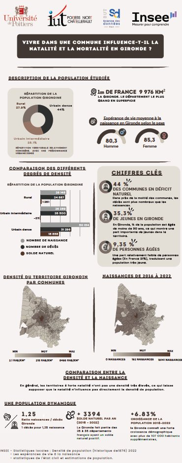

Mai

Description
Cette SAé portait sur la datavisualisation de données démographiques françaises. La problématique centrale était : vivre dans une commune influence-t-il la natalité et la mortalité ? À partir de données INSEE sur la Gironde, nous avons analysé la répartition de la population par densité (rural, urbain intermédiaire, urbain dense), les soldes naturels, les naissances de 2016 à 2022 et les chiffres clés du département.
Notre équipe a terminé 1er ex-æquo avec l'IUT de Paris. J'ai notamment conçu une carte interactive sur Power BI représentant la densité du territoire girondin par commune.
Compétences acquises
Outils & Technologies
Ce que j'ai appris
J'ai appris à faire une carte sur Power BI, ce qui n'a pas été facile étant donné que c'était la première fois. J'ai également appris à bien ordonner une infographie, même si ce n'est pas mon point fort.